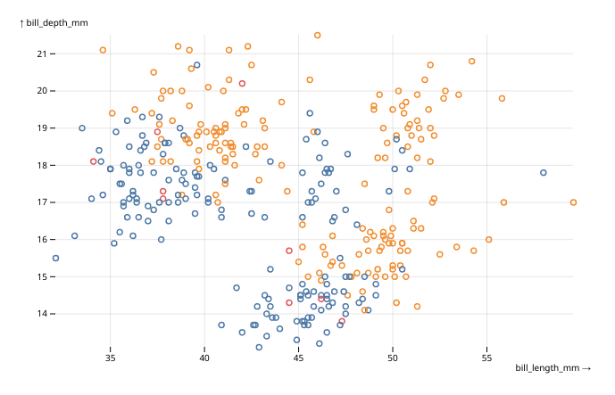
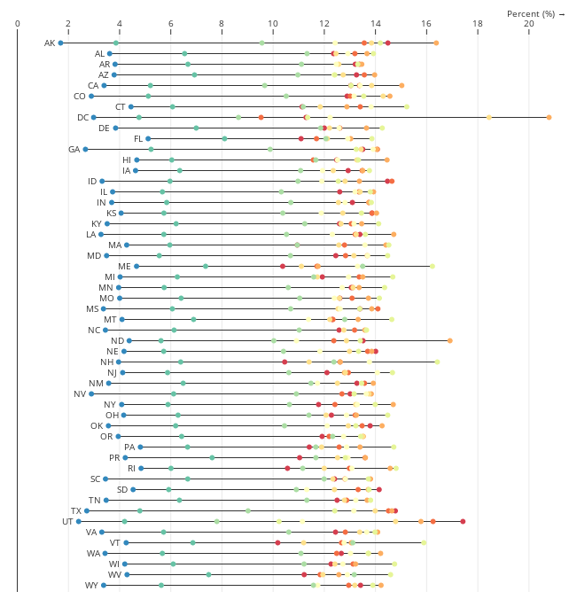

obsplot is an experimental attempt at using Observable Plot directly from R.
Please note that the package is in an early stage. Its API is subject to breaking changes, there are bugs, and maybe bad design choices. But if you still want to try the package, issues and feedback are very welcome !
Also note that obsplot doesn’t work in the RStudio viewer for now on, due to an outdated web rendering engine. You can either open the visualisation in a recent browser, or use R in VSCode.
Examples
Here is a small example of a simple scatterplot from the penguins dataset of the palmerpenguins package :
library(palmerpenguins)
data(penguins)
obsplot(penguins) |>
mark_dot(x = "bill_length_mm", y = "bill_depth_mm", stroke = "sex") |>
opts(grid = TRUE)
And here is a much more complex example taken from Observable Plot documentation :
data(stateage)
xy <- transform_normalizeX(basis = "sum", z = "name", x = "population", y = "name")
obsplot(stateage, height = 660) |>
mark_ruleX(x = 0) |>
mark_ruleY(
transform_groupY(list(x1 = "min", x2 = "max"), xy)
) |>
mark_dot(xy, fill = "age", title = "age") |>
mark_text(
transform_selectMinX(xy), textAnchor = "end", dx = -6, text = "name"
) |>
scale_x(
axis = "top", label = "Percent (%) →",
transform = JS("d => d * 100")
) |>
scale_y(axis = NULL) |>
scale_color(scheme = "spectral", domain = unique(stateage$age)) |>
opts(grid = TRUE)
You will find many more examples in the two gallery vignettes :
Usage
To get started, take a look at the introduction vignette.
Installation
From Github :
remotes::install_github("juba/obsplot")From R-universe :
install.packages("obsplot", repos = "https://juba.r-universe.dev")Credits
- Obviously, the Observable Plot library developed by Mike Bostock and Philippe Rivière at Observable.
- The htmlwidgets package, which does all the heavy work to bridge R and JavaScript.
- John Coene for the packer package, the JavaScript for R book and the g2r package which is a great source of inspiration.